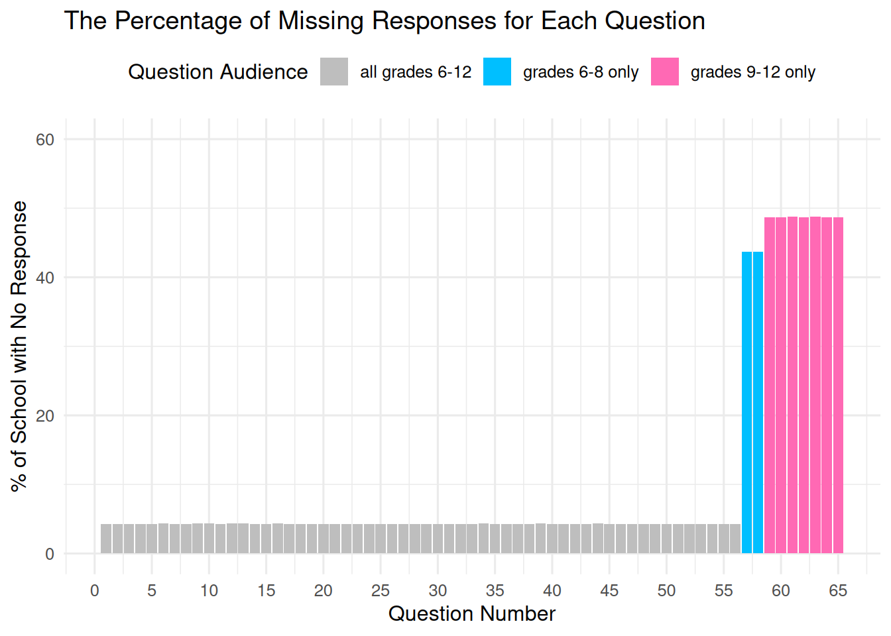
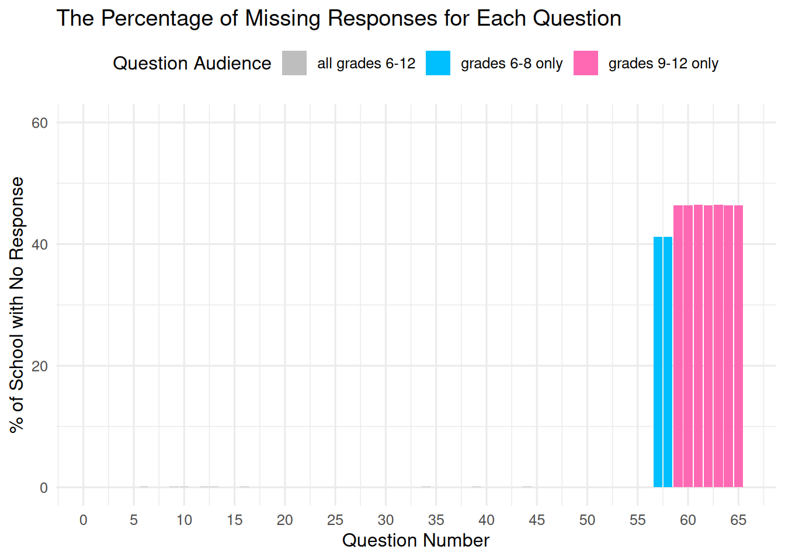
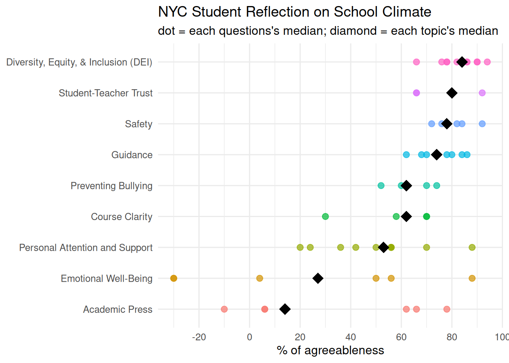
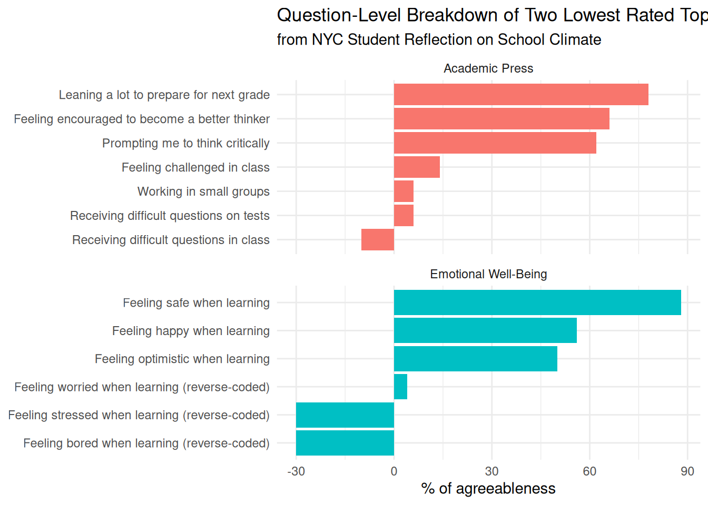
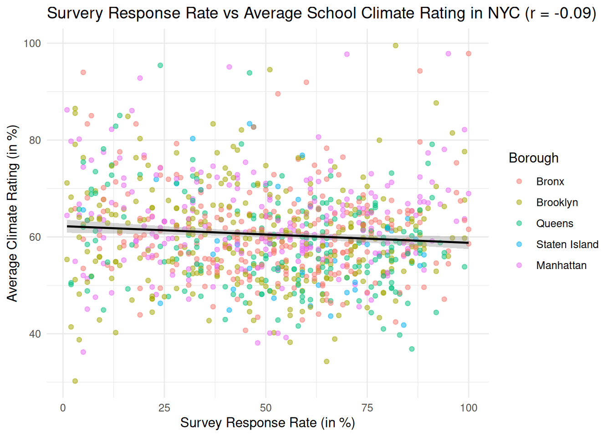
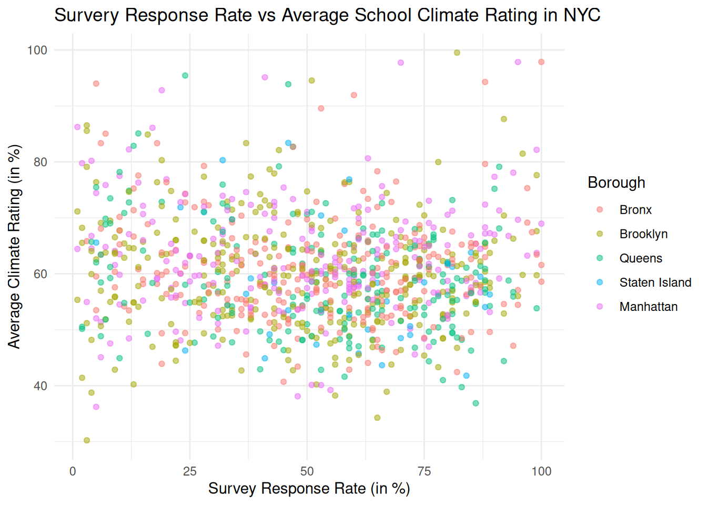

I was originally interested in a mental health-focused dataset, but found that there isn’t a large government dataset focused on residents’ psychological aspects available in NYC Open Data. However, I accessed the current dataset published by the Department of Education (DOE), which focuses on students’ feedback on their schools and includes responses indicating their satisfaction levels.
The responses are already aggregated to the school level, so instead of analyzing at an individual level, I will analyze students’ satisfaction at the school and city levels:
First, across New York City (NYC), which dimensions of school climate did students rate most and least positively? Second, do the five boroughs differ in students’ perceptions of climate, and if so, on which dimensions? Third, do the survey response rates correlate with how positively students rate their schools?
# A tibble: 6 × 6
school_name borough response_rate question_int topic net_pos
<chr> <chr> <dbl> <int> <chr> <dbl>
1 P.S. 034 Franklin D. Rooseve… Manhat… 75 1 Dive… 26
2 P.S. 034 Franklin D. Rooseve… Manhat… 75 2 Dive… 64
3 P.S. 034 Franklin D. Rooseve… Manhat… 75 3 Dive… 80
4 P.S. 034 Franklin D. Rooseve… Manhat… 75 4 Dive… 78
5 P.S. 034 Franklin D. Rooseve… Manhat… 75 5 Dive… 80
6 P.S. 034 Franklin D. Rooseve… Manhat… 75 6 Dive… 64
8.2.1 Description
The data come from the 2021 Public Data File -Student (https://data.cityofnewyork.us/Education/2021-Public-Data-File-Student/gdx6-nrns/about_data) on NYC Open Data, published by the New York City Department of Education. The underlying survey was administered to students in grades 6-12 across NYC public schools in 2021. For privacy reasons, the published public dataset aggregates individual responses to the school level and reports, for each survey question, the percentage of respondents who selected each response category at each school. The dataset contains 1077 schools (rows) and 133 columns. The first three columns identify the school, including a District Borough Number (DBN, e.g., 01M034), the school name, and the survey response rate. The DBN encodes the school’s district (the first two characters) and borough (third character: M for Manhattan, X for Bronx, K for Brooklyn, Q for Queens, and R for Staten Island), which we will use for geographic analysis later in this chapter. The remaining 130 columns hold 65 survey questions, each split across two columns reporting the percentage of students at the “negative pole” (e.g., Strongly Disagree / Disagree) and the “positive pole” (e.g., Strongly Agree / Agree) on the response scale. The dataset is updated and published annually; I chose the 2021 dataset because it is the most recent year available on NYC Open Data.
There are two details about the question columns that are worth flagging. One is that questions q50-q56 are negative framed, asking about bullying, harassment, drug use, and gang activity, so high “positive pole” percentages on these items indicate less supportive learning environments. The other note here is that grades restrict two question blocks: q57-q58 (high school application support) are asked only of grades 6-8, and q59-q65 (college and career readiness) are asked only for grades 9-12; we will analyze the structural pattern of such missing values in the next section.
8.2.2 Missing value analysis
# Check the percentage of schools missing each question, inferred by grade-level audiencestudent_na <- student_clean |>mutate(grade_level =case_when( question_int %in%57:58~"grades 6-8 only", question_int %in%59:65~"grades 9-12 only",TRUE~"all grades 6-12") ) |>group_by(question_int, grade_level) |>summarise(percentage_na =mean(is.na(net_pos)) *100)ggplot(student_na, aes(x = question_int, y = percentage_na, fill = grade_level)) +geom_col() +scale_x_continuous(breaks =seq(0, 65, 5)) +scale_y_continuous(limits =c(0, 60)) +scale_fill_manual(values =c("all grades 6-12"="grey","grades 6-8 only"="deepskyblue","grades 9-12 only"="hotpink" )) +labs(title ="The Percentage of Missing Responses for Each Question",x ="Question Number",y ="% of School with No Response",fill ="Question Audience" ) +theme_minimal(base_size =12) +theme(legend.position ="top")

The results of missing values are unexpected: although we already knew that there would be missing responses for q57-q65 due to the grade restriction (as explained in the data description section), we found that q1-q56 have a consistent percentage of missing responses, indicating that there might be schools that didn’t submit their responses for all questions. Therefore, we will be examining schools that missed all responses in the next step:
# A tibble: 46 × 1
school_name
<chr>
1 Cascades High School
2 High School of Hospitality Management
3 Independence High School
4 Harvey Milk High School
5 High School for Law, Advocacy and Community Justice
6 The Lexington Academy
7 The Judith S. Kaye School
8 Teachers College Community School
9 Thurgood Marshall Academy for Learning and Social Change
10 P.S. X037 - Multiple Intelligence School
# ℹ 36 more rows
As expected, we found that 46 schools failed to submit their responses. Now, let’s remove these schools from our cleaned dataset to prevent noise. Then, we will re-examine the missing value using the bar chart.
student_clean <- student_clean |>group_by(school_name) |>filter(!all(is.na(net_pos))) |>ungroup()student_na <- student_clean |>mutate(grade_level =case_when( question_int %in%57:58~"grades 6-8 only", question_int %in%59:65~"grades 9-12 only",TRUE~"all grades 6-12") ) |>group_by(question_int, grade_level) |>summarise(percentage_na =mean(is.na(net_pos)) *100)ggplot(student_na, aes(x = question_int, y = percentage_na, fill = grade_level)) +geom_col() +scale_x_continuous(breaks =seq(0, 65, 5)) +scale_y_continuous(limits =c(0, 60)) +scale_fill_manual(values =c("all grades 6-12"="grey","grades 6-8 only"="deepskyblue","grades 9-12 only"="hotpink" )) +labs(title ="The Percentage of Missing Responses for Each Question",x ="Question Number",y ="% of School with No Response",fill ="Question Audience" ) +theme_minimal(base_size =12) +theme(legend.position ="top")

Great! Now we finally receive a cleaned dataset. There might still be a few remaining missing responses for q1-q56 that are not apparent in the bar chart, but there are too few to affect our final results, so let’s move on to analyzing our research questions.
8.3 Results
8.3.1 Question 1: across New York City (NYC), which dimensions of school climate did students rate most and least positively?
# Compute per-question and per-topic mediansquestions <- student_clean |>group_by(topic, question_int) |>summarise(questions_median =median(net_pos, na.rm =TRUE))topics <- questions |>group_by(topic) |>summarise(topics_median =median(questions_median))# Order by topic's medianstopics <- topics |>mutate(topic =fct_reorder(topic, topics_median))questions <- questions |>mutate(topic =factor(topic, levels =levels(topics$topic)))# Plot the median dot plotggplot(questions, aes(x = questions_median, y = topic)) +geom_point(aes(color = topic), size =2.5, alpha =0.7) +geom_point(data = topics, aes(x = topics_median, y = topic),shape =18, size =5, color ="black") +scale_x_continuous(breaks =seq(-100, 100, 20)) +labs(title ="NYC Student Reflection on School Climate",subtitle ="dot = each questions's median; diamond = each topic's median",x ="% of agreeableness",y =NULL ) +theme_minimal(base_size =12) +theme(legend.position ="none")

Across the nine topics, students rated “Diversity, Equity, & Inclusion (DEI)” most positively, followed by “Student-Teacher Trust”, “Safety”, and “Guidance”, and rated “Academic Press” most negatively, followed by “Emotionally Well-Being”. The results indicate that students from NYC public schools generally perceived their schools as respectful, supportive, and trustworthy. However, more students disagreed than agreed that they were intellectually challenged in class and reported more negative than positive emotions. One possible explanation is that 2021 was still during the COVID-19 pandemic, so courses were mostly held online, and public emotions were generally lower because people couldn’t socialize as usual.
Another pattern worth noting is that, for the two lowest topics, the within-topic differences are noticeable, ranging from negative percentages of agreeableness to nearly 80-90%, suggesting that students had substantially different understandings across the questions designed to measure “Academic Press” and “Emotional Well-Being”. Therefore, let’s create two bar charts for these topics to closely examine which questions were the most concerning to NYC students.
8.3.1.1 Question 1.2: examining the question-level intragroup differences for the two lowest rated topics
# Create the question textq_text <-tribble(~question_int, ~question_text,# Academic Press28, "Leaning a lot to prepare for next grade",39, "Prompting me to think critically",41, "Feeling challenged in class",42, "Receiving difficult questions on tests",43, "Receiving difficult questions in class",44, "Working in small groups",45, "Feeling encouraged to become a better thinker",# Emotional Well-Being11, "Feeling happy when learning",12, "Feeling safe when learning",13, "Feeling optimistic when learning",14, "Feeling bored when learning (reverse-coded)",15, "Feeling stressed when learning (reverse-coded)",16, "Feeling worried when learning (reverse-coded)")focus_questions <- questions |>filter(topic %in%c("Academic Press", "Emotional Well-Being")) |>left_join(q_text, by ="question_int")#install.packages("tidytext")library(tidytext)ggplot(focus_questions, aes(x = questions_median, y =reorder_within(question_text, questions_median, topic), fill = topic)) +geom_col() +facet_wrap(~ topic, ncol =1, scales ="free_y") +scale_y_reordered() +labs(title ="Question-Level Breakdown of Two Lowest Rated Topics",subtitle ="from NYC Student Reflection on School Climate",x ="% of agreeableness",y =NULL ) +theme_minimal(base_size =11) +theme(legend.position ="none")

The bar chart reveals that the low ratings on “Academic Press” and “Emotional Well-Being” have significant in-group differences.
For “Academic Press”, students felt positive about being prepared and encouraged to think, but they also reflected that they were not challenged enough in class or on tests. Therefore, the interpretation is that, instead of feeling disappointed about their education, students felt that they were learning but not getting challenged to reflect on their learning outcomes.
For “Emotional Well-Being”, students reported feeling safe, happy, and optimistic, but also stressed and bored. The assumption is that such complicated emotions were aligned with the remote and hybrid learning conditions of 2021 (rather than solely reflecting the educational climate), when students had greater flexibility to stay at home, which led to more intense emotions.
8.3.2 Question 2: do the five boroughs differ in students’ perceptions of climate, and if so, on which dimensions?
# Aggregate by borough and topicborough_topic <- student_clean |>group_by(borough, topic) |>summarise(bor_top_median =median(net_pos, na.rm =TRUE))# Order topics by their mediantopics <- borough_topic |>group_by(topic) |>summarise(top_median =median(bor_top_median)) |>arrange(top_median) |>pull(topic)# Order boroughs by their cross-topic medianboroughs <- borough_topic |>group_by(borough) |>summarise(bor_median =median(bor_top_median)) |>arrange(bor_median) |>pull(borough)borough_topic <- borough_topic |>mutate(topic =factor(topic, levels = topics),borough =factor(borough, levels = boroughs))boroughs
X K Q R M
"Bronx" "Brooklyn" "Queens" "Staten Island" "Manhattan"
# Plot the heatmapggplot(borough_topic, aes(x = borough, y = topic, fill = bor_top_median)) +geom_tile() +scale_fill_gradient2(low ="hotpink",mid ="grey",high ="limegreen",midpoint =50,name ="median % of agreeableness" ) +labs(title ="NYC School Climate Ratings by Borough and Topic",x =NULL,y =NULL ) +theme_minimal(base_size =12) +theme(panel.grid =element_blank(),axis.text.x =element_text(angle =30, hjust =1) )

The heatmap shows that the topic-level ranking is generally identical across all five boroughs: every borough rates “Diversity, Equity, & Inclusion (DEI)” most positively (shown as the deep green at the top), and “Academic Press” and “Emotional Well-Being” most negatively (shown as the pink at the bottom). The results indicate that the patterns from Question #1 are not driven by any specific borough and instead reflect a citywide pattern.
There are two notable findings. First, Manhattan stands out as the most positive borough across nearly every topic, with the deepest green at the top and the lightest pink at the bottom. Second, while all four other boroughs share a gray-green on the topic “Preventing Bullying,” Manhattan presents a noticeable green, indicating that students from Manhattan public schools report a substantially higher rate on “Preventing Bullying” than students from other boroughs. One potential explanation for both observations is that Manhattan might receive the most funding, resulting in better educational resources.
8.3.3 Question 3: do the survey response rates correlate with how positively students rate their schools?
# Aggregate by schoolschool_avg <- student_clean |>group_by(school_name, borough, response_rate) |>summarise(pos_avg =mean(net_pos, na.rm =TRUE)) |>filter(!is.na(pos_avg))# Factor in borough level (not necessary, just for better visualization)school_avg <- school_avg |>mutate(borough =factor(borough, levels = boroughs))# Compute the correlationcorr <-cor(school_avg$response_rate, school_avg$pos_avg)# Plot the correlation graphggplot(school_avg, aes(x = response_rate, y = pos_avg)) +geom_point(aes(color = borough), alpha =0.5, size =1.5) +labs(title ="Survery Response Rate vs Average School Climate Rating in NYC",x ="Survey Response Rate (in %)",y ="Average Climate Rating (in %)",color ="Borough" ) +theme_minimal(base_size =11)

The scatterplot shows essentially no relationship between a school’s survey response rate and its overall climate rating. Despite the survey response rates, the corresponding average ratings are widely spread along the y-axis. In addition, borough colors are intermixed throughout the scatter cloud rather than clustering in specific regions, indicating no geographic differences between the two ratings.
8.4 Conclusion
The exploration of the 2021 Public Data File -Student reveals three main takeaways. First, NYC public school students generally perceived their schools as inclusive and supportive but felt notably less engaged academically and emotionally, which could be due to remote classes during the pandemic. For the two lowest rated topics, “Academic Press” and “Emotional Well-Being”, there are significant intragroup differences: students felt that they were learning but not being challenged, and felt happy and safe but also bored and stressed. Second, although the five boroughs differ in level, especially that Manhattan schools rate consistently most positively across nearly every topic, all boroughs present a similar shape on the topics, with the same topics ranking as the highest or lowest everywhere; the results indicate that NYC student perceptions of school climate are city-wide instead of borough-specific. Third, there is no significant correlation between response rate and climate score, suggesting that the above patterns are not influenced by who chose to respond to the surveys.
There are two main limitations for the current analysis. First, the surveys were completed in 2021, during the pandemic school year, so class formats were unusual, mainly remote or hybrid, so students were not exposed to the usual school climate. Second, 46 schools failed to submit any responses, so they were removed from the dataset, potentially leading to biased results.
For future studies, it would be interesting to combine datasets from pre- and post-pandemic years to assess whether there are any pandemic-year-specific temporal patterns. Another future study that can extend the current findings is to include schools’ annual funding to examine whether school climate is influenced by financial resources, as we assumed from Question #2.
As an incoming New Yorker who has lived here for less than one year, it’s very interesting to me to examine a NYC-specific dataset that reflects some typical NYC traits. For instance, students overall gave high ratings to schools for being inclusive and supportive, which aligns with NYC’s welcoming vibe. Another big lesson I learned is conducting geographical analysis: before examining Question #2, since I didn’t realize how Manhattan differs from the other boroughs in NYC, because I am almost always active only in Manhattan.